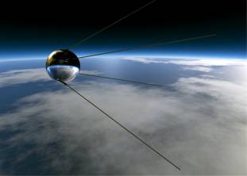
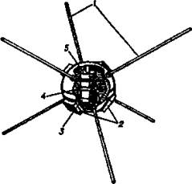

Сага о спутниках
Впрочем, мы с вами несколько забежали по времени вперед. Вернемся снова в середину 50-х годов прошлого столетия и посмотрим, как готовились к выходу на орбиту первые спутники.
«ОБЪЕКТ Д». Когда однажды журналисты попросили С. П. Королева рассказать о том, как рождался первый спутник, он, в частности, сказал следующее:
«Я пришел в ракетную технику с надеждой на полет в космос, на запуск спутника. Но долго не было реальных возможностей для этого, о первой космической скорости можно было лишь мечтать. С созданием мощных баллистических ракет заветная цель становилась все ближе. Мы внимательно следили за сообщениями о подготовке в Соединенных Штатах Америки спутника, названного не без намека „Авангардом“. Кое-кому тогда казалось, что он будет первым в космосе.
Я попросил подобрать мне материал об этом будущем спутнике. Мне приготовили. Мы посчитали и убедились, что американские ракетчики могут вывести на орбиту… апельсин.
Все было ограничено у них до предела. Главное, что их сковывало, — это ракета. Ее тяга такова, что не дает никаких резервов и предъявляет огромные требования к точности, к разъединению ступеней.
Посчитали и мы, чем располагаем. Убедились: можем вывести добрую сотню килограммов на орбиту…»
Однако когда Королев обратился с таким предложением к вышестоящему руководству, то идея была встречена в штыки. Убеленные сединами академики считали это предложение абсурдом, генералы из Министерства вооружений вообще не видели какого-либо смысла в подобном запуске. И только определенная «настырность» Королева позволила ему «продавить» противодействие власти.
Для этого, в частности, он прибег к помощи М. К. Тихонравова, который подготовил подробную докладную записку «Об искусственном спутнике Земли». И 26 мая 1954 года Сергей Королев отправил ее в Центральный Комитет КПСС и в Совет Министров. В сопроводительной записке он, в частности, писал: «Мне кажется, что в настоящее время была бы своевременной и целесообразной организация научно-исследовательского отдела для проведения первых поисковых работ по спутнику и более детальной разработки комплекса вопросов, связанных с этой проблемой».
В ответ ему указывают, что создание боевой ракеты, способной достичь Америки, куда более важная задача, чем какие-то «игрушки». Но с боевой ракетой, как мы знаем, пока далеко не все получалось, «как надо». И Королев проявляет настойчивость — «наверх» уходит очередная докладная, подготовленная уже сотрудником ОКБ Ильей Лавровым. В ней всячески подчеркивалась мысль, что «создание ИСЗ будет иметь огромное политическое значение как свидетельство высокого уровня развития нашей отечественное техники».
Но когда даже этот «убойный» аргумент не подействовал.

Первый советский спутник.
Королев решил зайти с другого хода — через Академию наук.
Тридцатого августа 1955 года в кабинете тогдашнего главного ученого секретаря президиума АН СССР академика Топчиева собрались ведущие специалисты по ракетной технике, в том числе Королев, Келдыш и Глушко.
Сергей Павлович выступил с кратким сообщением, в котором подчеркнул: «Я считаю необходимым создание в Академии наук СССР специального органа по разработке программы научных исследований с помощью серии искусственных спутников Земли, в том числе и биологических, с животными на борту…»
Королева поддержал Келдыш, которого тут же и выбрали председателем комиссии по разработке подобной программы.
Королев сделал правильный ход. С декабря 1955-го по март 1956 года Мстислав Келдыш провел ряд совещаний с учеными разных специальностей, так или иначе заинтересованными в космических исследованиях. Такой серьезный подход к делу привел к тому, что правительство уже не могло просто отмахнуться от «фантастического прожекта». И 30 января 1956 года было принято постановление Совета Министров № 149-88 СС, которым предусматривалось создание «Объекта Д» — неориентируемого искусственного спутника Земли. По первым прикидкам, он должен был весить 1000–1400 кг, из них примерно треть отводилась под научную аппаратуру. Старт первого пробного пуска назначили на лето 1957 года.
НАПЕРЕГОНКИ С АМЕРИКАНЦАМИ. В определенной степени подкорректировали ситуацию и данные из-за рубежа о том, что в США тоже проявляют интерес к подобной программе.
Королев тут же сформировал в ОКБ-1 отдел разработок искусственных спутников Земли под руководством М. К. Тихонравова. Причем по предложению Келдыша отдел начал работу сразу над несколькими вариантами «Объекта Д», один из которых предусматривал наличие контейнера с «биологическим грузом» — подопытной собакой.
В начале 1957 года Королев направил в правительство очередную докладную записку, в которой просил «разрешить подготовку и проведение первых пусков двух ракет, приспособленных в варианте искусственных спутников Земли, в период апрель-июнь 1957 г., до официального начала Международного геофизического года, проводящегося с июля 1957 г. по декабрь 1958 г.».
Заодно Королев намекнул, что в Соединенных Штатах Америки тоже ведется весьма интенсивная подготовка к запуску искусственного спутника Земли. Наиболее известен проект под названием «Авангард» на базе трехступенчатой ракеты, где в одном из вариантов в качестве первой ступени используется ракета «Редстоун». Спутник представляет собой шаровидный контейнер диаметром 50 см и весом около 10 кг.
Действительно, в сентябре 1956 года американские конструкторы сделали попытку запустить на базе Патрик, штат Флорида, трехступенчатую ракету и на ней спутник. Однако тот на орбиту не вышел, хотя заинтересованные лица и дали сообщение в печать, подчеркнув, что ракета пролетела около 3000 миль (примерно 4800 км), что является выдающемся рекордом.
Тут уж и до наших политиков постепенно начало доходить, что американцам вовсе не вредно было бы «утереть нос». Королеву перестали ставить палки в колеса — напротив, его стали торопить.
Да он и сам спешил, опасаясь, что американцы действительно опередят его. Поэтому он отказался от первоначальных планов по запуску на орбиту сразу тяжелой научной лаборатории. Созвав своих сотрудников, занятых проектированием спутника, Сергей Павлович предложил работы по «Объекту Д» временно остановить, а сделать за месяц «хоть на коленке» маленький легкий спутник.
Руководство работами по конструированию и изготовлению «ПС-1» («Простейший спутник первый») поручили двум инженерам — Михаилу Хомякову и Олегу Ивановскому. Подачу радиосигналов продумывал Михаил Рязанский Головной обтекатель ракеты, защищающий спутник от воздействия окружающей среды, проектировала группа Сергея Охапкина.
В итоге получалось, что вместо действительно полезного груза будет водружен шар чуть больше футбольного мяча, но это уже никого не волновало. Главное было — опередить американцев.
Кроме того, Королев велел навести на шар спутника зеркальный блеск: он должен был предстать перед объективами кинокамер и фотоаппаратов в идеальной чистоте.
«Через три дня здесь все должно блестеть, повесьте белые шторы на окна, оденьте всех, кто здесь работает, в белые халаты и перчатки, а подставку под спутником покрасьте белой краской и ложемент обтяните бархатом», — велел Королев.
ЗАЖГЛИ СВОЮ ЗВЕЗДУ. И вот 20 сентября 1957 года на Байконуре состоялось заседание специальной комиссии по запуску спутника. Все подтвердили готовность к старту. Тогда же (на всякий случай) было решено сообщить о запуске спутника в печати только после выхода его на орбиту.
И вот наконец 4 октября 1957 года маленькое чудо состоялось. Сначала ярчайшая вспышка осветила ночную казахстанскую степь, и ракета-носитель M-1СП ушла вверх.
Наблюдения на первых витках показали, что спутник вышел на орбиту с наклонением 65,1°, высотой в перигее 228 км и максимальным удалением от поверхности Земли 947 км. На каждый виток вокруг Земли он тратил 96 минут 10,2 секунды.
И лишь после этого, 5 октября в 0 часов 58 минут по московскому времени ТАСС в специальном выпуске сообщило: «В результате большой напряженной работы научно-исследовательских институтов и конструкторских бюро создан первый в мире искусственный спутник Земли. 4 октября 1957 года в Советском Союзе произведен успешный запуск первого спутника».
И весь мир услышал знаменитое: «Бип… бип… бип…»
Хотя запуск не обошелся без некоторых технических сбоев, о которых стало известно лишь сравнительно недавно, главное было сделано: мы ошеломили американцев. Да что там США. Люди во всем мире выскакивали из домов в ночь-полночь, чтобы указать друг другу в ночном небе: «Вон летит русская звезда!» Слово «спутник» мгновенно стало понятным всем без перевода.
По всему Советскому Союзу прошли спонтанные, действительно никем не организуемые демонстрации. Народ радовался: «Вот мы, оказывается, что можем!»
Американцев же, напротив, этот запуск поверг в уныние. Пресса была полна ядовитых упреков правительству, которое, дескать, только и может, что хвастаться по пустякам. Были обеспокоены и военные: они поняли, что у русских есть ракеты, которые способны достигнуть Америки, с любой стороны обогнув Землю.
ДАВАЙ, ЕЩЕ ДАВАЙ!.. Самую бурную деятельность теперь, пожалуй, развил Н. С. Хрущев. Он понял, какой мощный козырь попал ему в руки. И тут же пригласил в Кремль Королева и Келдыша, настойчиво намекнув им, что теперь необходим космический подарок советскому народу и к сороковой годовщине Великой Октябрьской социалистической революции.
Королев пытался было возражать: осталось меньше месяца, повторять такой же пуск нет никакого смысла, а «объект Д» еще не готов. Однако Хрущев был неумолим.
В этих условиях 12 октября и было принято решение о запуске к 40-й годовщине Октябрьской революции второго искусственного спутника. Оно, по существу, стало смертным приговором для одной из еще не выбранных в тот момент беспородных собачек.
А сам спутник ПC-2 создавался даже без предварительного проекта. Проектанты переместились в цеха, там рисовали эскизы, а сборка шла путем подгонки деталей друг к другу по месту.
Делать сам спутник времени тоже не было, а потому под ПС-2 трансформировали головную часть последней ступени ракеты Р-7.
Пуск состоялся 3 ноября 1957 года. И вот тут выяснилось, что Никита Сергеевич несколько просчитался. Хотя американцев и посрамили во второй раз, по миру прокатился гул неодобрения по поводу гибели симпатичной собачки. В ответ на это советская табачная промышленность срочно выпустила сигареты «Лайка» с изображением на упаковке портрета самой героини. Но членов Общества защиты животных такая мемориальная память не успокоила.
Пришлось столь же срочно готовить запуск и третьего спутника. На сей раз королевцы собирались послать в космос нечто действительно полезное. А именно — 28 апреля 1958 года очередная ракета-носитель должна была вывести на орбиту научно-исследовательскую лабораторию весом в 1327 кг. Однако сразу же после старта ракета пошла «кувырком» и рухнула на землю.
ТАСС об этом, естественно, не сообщило. Но Королев получил нагоняй. Тогда он собрал своих сотрудников и объявил, что каждому выплачивается крупная премия при условии, если он, как и его коллеги, останется на полигоне и подготовит следующий носитель ударными темпами.
Люди соблазнились посулами, и вся подготовка была проведена за две недели. И 15 мая 1958 года ракета с индексом Б1-1 вывела на орбиту третий советский ИСЗ — именно под этим обозначением «объект Д» вошел в историю. Его внушительная масса вызвала всеобщее уважение. Западная пресса писала: «Сегодня русские запустили в космос слона. Что же они выкинут завтра?…»
АМЕРИКАНСКИЙ ОТВЕТ. Американский журнал «Форчун» ту же мысль выразил несколько иначе: «Мы не ждали советского спутника, и поэтому он произвел на Америку Эйзенхауэра впечатление нового технического Пёрл-Харбора».
Шок, который испытали американцы после успешного запуска ПС-1, наглядно иллюстрирует еще и такой факт. Сразу же после запуска советского спутника в Пентагоне всерьез обсуждали проект «закрытия неба». То есть на орбиту предлагалось срочно выбросить тонны металлолома — шарики от подшипников, гвозди, стальную стружку… Это, по мнению заокеанских стратегов, привело бы к бесполезности любых космических запусков — врезавшись в эту кучу мусора, любой аппарат тут же вышел бы из строя.
Однако, к счастью, здравый смысл все же возобладал. Американцы просто лихорадочно засуетились, решив послать на орбиту собственные искусственные спутники. И даже нашли для них массу полезных применений. Так, на 4-м Международном конгрессе по астронавтике, проходившем в 1953 году в Цюрихе, Фред Зингер из Университета штата Мериленд (не путать его с немецким профессором Э. Зенгером — автором проекта космического бомбардировщика. — С. С.) заявил, что искусственные спутники Земли окажутся весьма полезны, например, для научных исследований с целью получения более точных метеопрогнозов.
ЗАПОЗДАЛЫЙ «АВАНГАРД». Чтобы хоть как-то обставить русских, специалисты, работавшие над программой «Авангард», предлагали одним махом вывести в космос сразу три спутника! Впрочем, это было чистой воды надувательство. Каждый из таких спутников должен был представлять собой компактно сложенную пластиковую оболочку, сверху покрытую алюминиевой фольгой. В космосе такая оболочка была бы раздута сжатым газом, и получился бы шар диаметром около 50 см.
Но потом все-таки решили оснастить спутник хоть какими-то приборами. Однако жесткие весовые ограничения привели к тому, что спутник, весивший всего 1,36 кг, имел в себе только два примитивных передатчика, передающих сигналы на частотах 108 и 108,03 МГц. Первый получал питание от аккумуляторной химической батареи мощностью 10 мВт, второй — от солнечных батарей суммарной мощностью 5 мВт, установленных на внешней поверхности спутника.
Тем не менее надо отдать должное президенту США Дуайту Эйзенхауэру. Он хотя, как бывший военный, и отлично понимал, какую нагрузку вместо спутника могут нести советские ракеты, счел возможным уже 9 октября, когда в «Правде» была опубликована более-менее полная информация о первом спутнике, выступить на пресс-конференции в Белом доме с поздравлениями в адрес советских ученых. Кроме того, в своей речи президент вкратце рассказал о том, что делается по проекту «Авангард», и пообещал, что и первый американский спутник будет выведен на орбиту еще до истечения года.
Тут, видимо, следует упомянуть, что сразу же после того, как стало известно о запуске советского спутника, Вернер фон Браун обратился к министру обороны с предложением о возрождении ранее предложенного им проекта «Орбитер». И заверил, что его спутник выйдет на орбиту уже через два месяца!
Однако американцы уперлись. Предложение фон Брауна снова отклонили: дескать, мы и сами с усами. Тем более что представители флота бодро рапортовали о своей готовности в скором времени «осуществить исторический старт».
Действительно, 23 октября 1957 года состоялся пробный суборбитальный запуск прототипа системы «Авангард», которой было присвоено обозначение TV-2 (сокращение от «Test Vehicle» — «Модель-лаборатория»). Запуск был признан успешным, хотя ракета «Авангард» сумела достигнуть высоты всего лишь в 175 км и скорости 1,9 / .
Орбитальный запуск назначили на 2 декабря. Однако из-за технических неполадок он несколько раз откладывался. А когда 6 декабря в присутствии более чем двухсот корреспондентов с космодрома на мысе Канаверал ракета «Авангард-1» наконец-таки стартовала, вся Америка (да и весь мир в придачу) испытали чувство неловкости и некоторого злорадства. Хваленый «Авангард» никуда не улетел, а сразу же после старта завалился набок и взорвался с жутким грохотом.
ЗАМЫСЕЛ «РАКЕТНОГО БАРОНА». Тут уж стало не до национальной гордости — надо было во чтобы то ни стало спасать честь мундира. Администрация Белого дома пошла на поклон к бывшему нацисту Вернеру фон Брауну.
И 8 ноября, через пять дней после выхода на орбиту второго советского спутника с собакой Лайкой на борту, министр обороны Макэлрой получил подробное техническое описание проекта запуска искусственного спутника с использованием ракет «Юпитер-С».
Схема запуска, предложенная Вернером фон Брауном, выглядела так. Ракета-носитель состояла из четырех ступеней.

Американский искусственный спутник «Vaguard-?». Цифрами обозначены: 1 — антенны; 2 — солнечные батареи; 3 — радиопередатчик; 4 — химические батареи; 5 — второй передатчик.
Спутник «Эксплорер-1» устанавливался в носовом отсеке ракеты «Сержент». Весил он всего 4,82 кг, так что в комплект научной аппаратуры спутника входило немногое: счетчик Гейгера-Мюллера для исследования космических лучей, особая сетка и микрофон для регистрации микрометеоритов и датчики температуры. Данные с приборов поступали непрерывно через четыре гибкие штыревые антенны, установленные симметрично. Питание осуществлялось ртутными батареями.
«Ракетный барон» в очередной раз утер носы своим конкурентам. Первого февраля 1958 года (через 119 дней после «космического Перл-Харбора») «Эксплорер-1» был выведен на орбиту. Причем в ходе полета было сделано открытие, подтвердившее гипотезу о существовании радиационных поясов вокруг Земли.
А спутник «Авангард-1» удалось запустить в космос только 17 марта 1958 года.